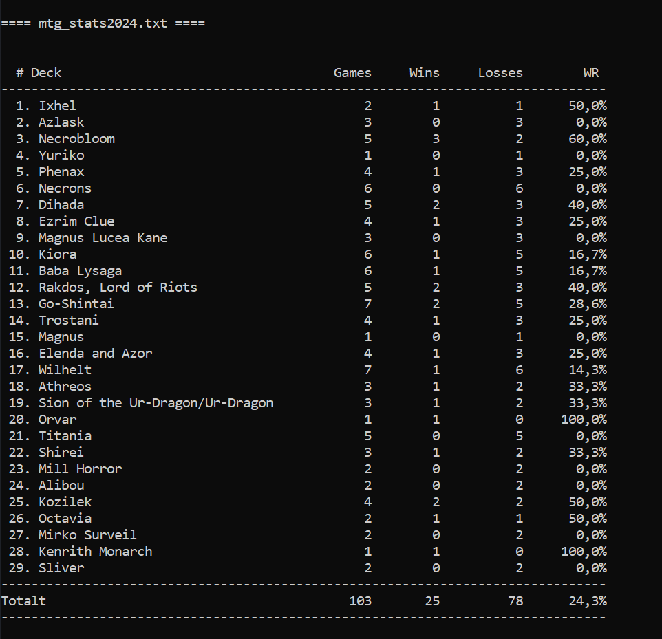

Deck Stats
Ett C# konsolprogram som läser matchstatistik från .txt-filer och sammanställer resultat för olika Magic-lekar. Projektet fokuserar på filhantering, textparsing och att presentera statistik i ett tydligt tabellformat.
Visa på GitHub